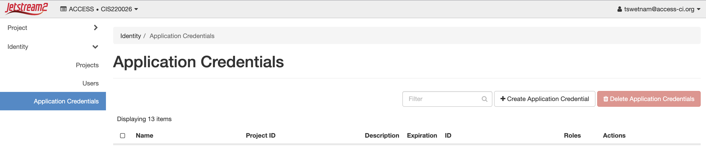
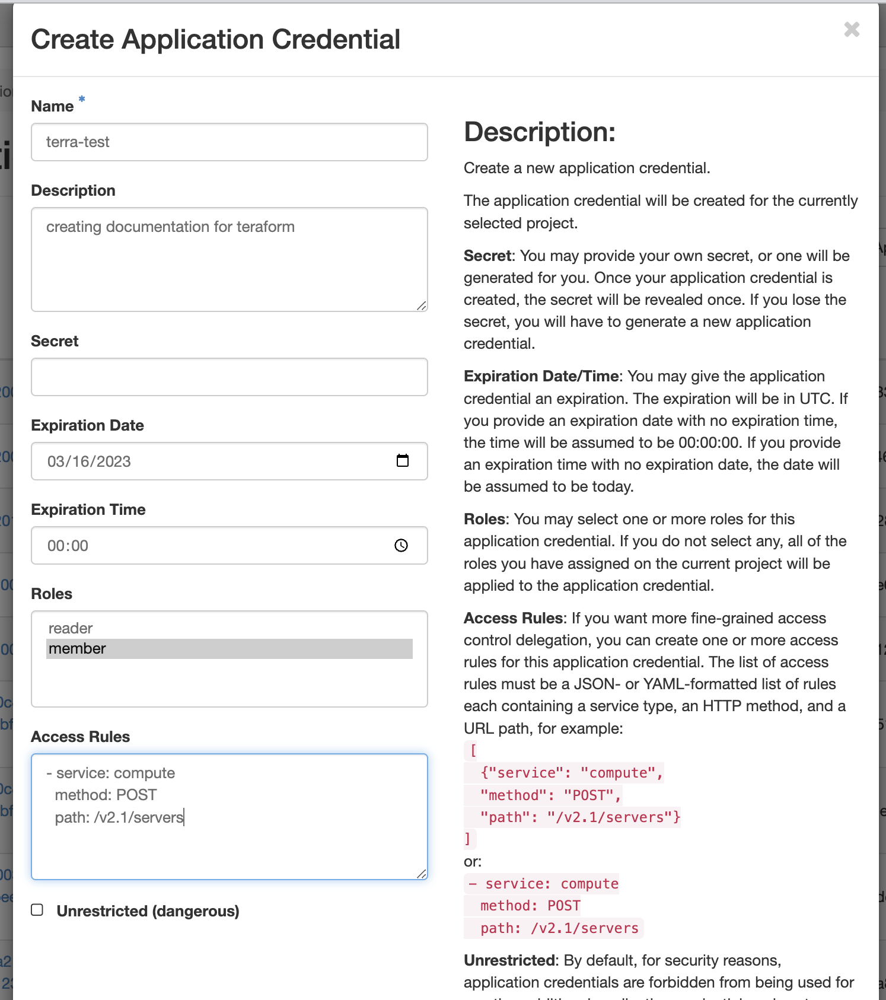
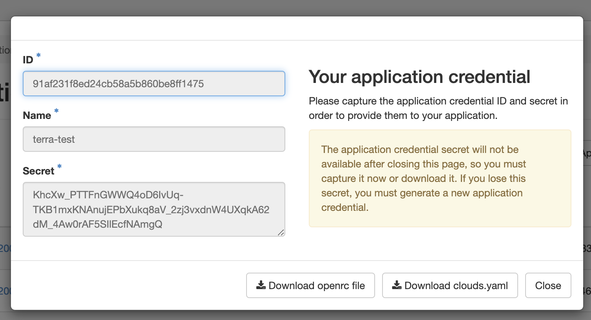

Introduction to Terraform¶
Terraform is an open-source infrastructure-as-code (IaC) software tool created by HashiCorp.
What is Infrastructure-as-Code (IaC)?
"Infrastructure as code (IaC) is the process of managing and provisioning computer data centers through machine-readable definition files, rather than physical hardware configuration or interactive configuration tools." - Wikipedia
IaC tools allow you to manage infrastructure with configuration files rather than through a graphical user interface. IaC allows you to build, change, and manage your infrastructure in a safe, consistent, and repeatable way by defining resource configurations that you can version, reuse, and share. -- Terraform Documentation
Overview¶
This basic tutorial will guide you through setting up a Terraform project and deploying virtual machines (VMs) as infrastructure on OpenStack Cloud.
Goals
Understand orchestration for deployment to OpenStack cloud (Jetstream2)
Understand the benefits of Terraform
Ability to perform basic deployments on OpenStack using Terraform
Ability to perform provisioning of deployed OpenStack resources through Terraform
Things we won't cover
OpenStack API
All of Terraform's features
Prerequisites¶
-
Basic understanding of OpenStack and VMs
-
Access to an OpenStack cloud (we will use Jetstream2)
-
Terraform installed on your local machine
-
Optional: request your own allocation to Jetstream2 on NSF ACCESS-CI
Outcomes
By the end of this tutorial, you will
have created SSH keypair
generated an *-openrc.sh file from OpenStack
started, stopped, and destroyed a Terraform deployment on an OpenStack Cloud
Terminology
Ansible - is a suite of software tools that enables infrastructure as code
Deploy - to create a cloud resource or software
Infrastructure - is the collection of hardware and software elements such as computing power, networking, storage, and virtualization resources needed to enable cloud computing
Orchestration - is the automated configuring, coordinating, and managing of computer systems and software
Playbook - are a list of tasks that automatically execute against a host
Provision - making changes to a VM including updating the operating system, installing software, adding configurations
Terraform - is an infrastructure as code tool that lets you build, change, and version cloud and on-prem resources safely and efficiently
Getting onto OpenStack Cloud¶
What is OpenStack?
OpenStack is an open source cloud computing infrastructure software project and is one of the three most active open source projects in the world.
OpenStack clouds are managed by individuals and institutions on their own bare-metal hardware.

If you do not have an account, go to https://allocations.access-ci.org/ and begin the process by requesting an "Explore" start-up allocation.
ACCESS is the NSF's management layer for their research computing network (formerly called TerraGrid and XSEDE) which includes high performance computing, high throughput computing, and research clouds like Jetstream2.
Jetstream2 is a public research cloud which uses OpenStack as its management layer.
CyVerse is developing a User Interface for Jetstream2 called CACAO (Cloud Automation & Continuous Analysis Orchestration). Beneath its hood is Terraform. CACAO can also be used from the CLI (which we will show in a later lesson).
Terraform installation¶
Windows Installation
Download Terraform using the appropriate distribution for your OS
Mac OS X Installation
Instructions for Mac OS X installation
If you're on OS X, you can use brew to install with the following commands:
Linux Installation
Instructions for Ubuntu 22.04 installation
wget -O- https://apt.releases.hashicorp.com/gpg | gpg --dearmor | sudo tee /usr/share/keyrings/hashicorp-archive-keyring.gpg
echo "deb [signed-by=/usr/share/keyrings/hashicorp-archive-keyring.gpg] https://apt.releases.hashicorp.com $(lsb_release -cs) main" | sudo tee /etc/apt/sources.list.d/hashicorp.list
sudo apt update && sudo apt install terraform
Install Ansible & J Query
Confirm installation:
Should output:
Usage: terraform [global options] <subcommand> [args]
The available commands for execution are listed below.
The primary workflow commands are given first, followed by
less common or more advanced commands.
Main commands:
init Prepare your working directory for other commands
validate Check whether the configuration is valid
plan Show changes required by the current configuration
apply Create or update infrastructure
destroy Destroy previously-created infrastructure
All other commands:
console Try Terraform expressions at an interactive command prompt
fmt Reformat your configuration in the standard style
force-unlock Release a stuck lock on the current workspace
get Install or upgrade remote Terraform modules
graph Generate a Graphviz graph of the steps in an operation
import Associate existing infrastructure with a Terraform resource
login Obtain and save credentials for a remote host
logout Remove locally-stored credentials for a remote host
metadata Metadata related commands
output Show output values from your root module
providers Show the providers required for this configuration
refresh Update the state to match remote systems
show Show the current state or a saved plan
state Advanced state management
taint Mark a resource instance as not fully functional
test Experimental support for module integration testing
untaint Remove the 'tainted' state from a resource instance
version Show the current Terraform version
workspace Workspace management
Global options (use these before the subcommand, if any):
-chdir=DIR Switch to a different working directory before executing the
given subcommand.
-help Show this help output, or the help for a specified subcommand.
-version An alias for the "version" subcommand.
Generate an OpenStack Credential for Terraform¶
Log into OpenStack's Horizon Interface
Step 1 Log into OpenStack's Horizon Interface and create application credentials
Generate an openrc.sh file in Jetstream2 Horizon Interface (https://js2.jetstream-cloud.org),
Select the "Identity" then "Application Credentials" option in the menu (left side)
Select "+ Create Application Credential" button on right

Give your new credentials a name and description, leave most of the fields blank

Download the new crededential openrc.sh file to your local
Important
Do not close the Application Credentials window without copying the secret or downloading the openrc.sh file.

Create an SSH keypair with OpenStack¶
Creating a SSH key
To create an SSH key on an Ubuntu 22.04 terminal, you can follow these steps:
Step 1: Open your terminal and type the following command to generate a new SSH key pair:
Step 2: When prompted, press "Enter" to save the key in the default location, or enter a different filename and location to save the key.
Enter a passphrase to secure your key. This passphrase will be required to use the key later.
Once the key is generated, you can add it to your SSH agent by running the following command:
Step 3: Copy the public key to your remote server by running the following command, replacing "user" and "server" with your username and server address:
create_ssh_script.sh:
#!/bin/bash
echo "Generating SSH key pair..."
ssh-keygen -t rsa -b 4096
echo "Adding key to SSH agent..."
eval "$(ssh-agent -s)"
ssh-add ~/.ssh/id_rsa
read -p "Enter your remote server username: " username
read -p "Enter your remote server IP address: " server
echo "Ready to copy your new public key to a remote server:"
ssh-copy-id username@server
echo "SSH key setup complete!"
Save the script to a file, make it executable with the following command:
run it with the following command:
Check to make sure you have a public key in the ~/.ssh/ directory, it should have the extension .pub
Create the keypair to OpenStack
You can now check in OpenStack for the new keypair here: https://js2.jetstream-cloud.org/project/key_pairs
Initialize your Terraform project¶
Create a new project folder for our configuration files.
Copy the openrc.sh file you downloaded from OpenStack into the new folder.
Change Directory into your new terraform/ folder and source the openrc.sh file to create its environmental variables locally.
By sourcing this file, you avoid placing sensitive information about yourself into your code.
Configuration files¶
Terraform code is written in HCL (Hashicorp Configuration Language), and its configuration files typically end in the .tf file extension.
Configuration .tf files can either be split into multiple files or maintained in a single file.
When using multiple files, it is up to your discretion what the file names are, or how many you decide to split it into.
File Organization¶
An example for file organization of a terraform project might involve:
terraform-project/
├── main.tf
├── variables.tf
├── outputs.tf
├── instances.tf
├── security.tf
└── modules/
├── network/
│ ├── main.tf
│ ├── variables.tf
│ └── outputs.tf
└── compute/
├── main.tf
├── variables.tf
└── outputs.tf
Main Configuration File (main.tf): - contains the primary infrastructure resources and configurations for virtual machines, networks, and storage.
Security File (security.tf): - contains optional security group details for instances.
Variables File (variables.tf): - defines all the input variables used in the configuration. Declare variables with default values or leave them empty for required user input. Include descriptions for each variable to provide context.
Instances File (instances.tf): - provisions the Instance flavor and IP networking of the VMs
Outputs File (outputs.tf): - defines the outputs Terraform displays after applying the Main and Variables configuration. Includes: IP addresses, DNS names, or information for resources.
Other optional files¶
Provider Configuration File (provider.tf): - includes the provider(s) used in the configuration, such as OpenStack (on commerical cloud: Amazon Web Services (AWS), Azure, or Google Cloud Platform(GCP)) along with their authentication and regional settings.
Modules and Reusable Configurations: - create separate .tf files for reusable modules and configurations. Reuse across multiple projects or within the same project on multiple VMs.
Terraform configuration files.¶
Create the main.tf file in the ~/terraform/ directory
main.tf¶
terraform {
required_version = ">= 0.14.0"
required_providers {
openstack = {
source = "terraform-provider-openstack/openstack"
version = ">=1.47.0"
}
}
}
provider "openstack" {
auth_url = "https://js2.jetstream-cloud.org:5000/v3/"
region = "IU"
}
The main.tf file has just the basics for calling out to an OpenStack provider - we created the necessary configurations for this in the prior steps by sourcing the *-openrc.sh file and running terraform init.
variables.tf¶
Create variables.tf, it can also be called inputs.tf
Here you need to go back to OpenStack and get a couple of additional variables:
vm_number - defines the number of VMs you wish to launch
public_key - you need the name of your paired SSH key that you generated in the prior step
image_name - select the name of a featured or unique image you wish to launch.
variable "vm_number" {
# creates a single VM
# replace with a larger number to launch more than one VM
default = "1"
}
variable "public_key" {
# replace this with the name of the public ssh key you uploaded to Jetstream 2
# https://docs.jetstream-cloud.org/ui/cli/managing-ssh-keys/
default = "tswetnam-terraform-key"
}
variable "image_name" {
# replace this with the image name of the ubuntu iso you want to use
# https://js2.jetstream-cloud.org/project/images
default = "Featured-Ubuntu20"
}
variable "network_name" {
# replace this with the id of the public interface on JS2 in Project / Network / Networks / public
# https://js2.jetstream-cloud.org/project/networks/
default = "auto_allocated_network"
}
security.tf¶
This file produces two distinct security groups, terraform_ssh_ping creates a group with ssh access and ping, terraform_tcp_1 creates a group which opens the HTTP (80, 8080), HTTPS (443) ports for connecting a browser based service.
################
#Security section
################
# Creating Compute Security group
resource "openstack_compute_secgroup_v2" "terraform_ssh_ping" {
name = "terraform_ssh_ping"
description = "Security group with SSH and PING open to 0.0.0.0/0"
#ssh rule
rule{
ip_protocol = "tcp"
from_port = "22"
to_port = "22"
cidr = "0.0.0.0/0"
}
rule {
from_port = -1
to_port = -1
ip_protocol = "icmp"
cidr = "0.0.0.0/0"
}
}
# Create a Netowrking Security group
resource "openstack_networking_secgroup_v2" "terraform_tcp_1" {
name = "terraform_tcp_1"
description = "Security group with TCP open to 0.0.0.0/0"
}
# Allow HTTP (port 80) traffic
resource "openstack_networking_secgroup_rule_v2" "http_rule" {
direction = "ingress"
ethertype = "IPv4"
protocol = "tcp"
port_range_min = 80
port_range_max = 80
remote_ip_prefix = "0.0.0.0/0"
security_group_id = "${openstack_networking_secgroup_v2.terraform_tcp_1.id}"
}
# Allow HTTPS (port 443) traffic
resource "openstack_networking_secgroup_rule_v2" "https_rule" {
direction = "ingress"
ethertype = "IPv4"
protocol = "tcp"
port_range_min = 443
port_range_max = 443
remote_ip_prefix = "0.0.0.0/0"
security_group_id = "${openstack_networking_secgroup_v2.terraform_tcp_1.id}"
}
# Allow Service (port 8080) traffic
resource "openstack_networking_secgroup_rule_v2" "service_rule" {
direction = "ingress"
ethertype = "IPv4"
protocol = "tcp"
port_range_min = 8080
port_range_max = 8080
remote_ip_prefix = "0.0.0.0/0"
security_group_id = "${openstack_networking_secgroup_v2.terraform_tcp_1.id}"
}
instances.tf¶
################
# Instance OS
################
# create each Ubuntu20 instance
resource "openstack_compute_instance_v2" "Ubuntu20" {
name = "container_camp_Ubuntu20_${count.index}"
# ID of Featured-Ubuntu20
image_name = var.image_name
# flavor_id is the size of the VM
# https://docs.jetstream-cloud.org/general/vmsizes/
flavor_name = "m3.tiny"
# this public key is set above in security section
key_pair = var.public_key
security_groups = ["terraform_ssh_ping", "default"]
count = var.vm_number
metadata = {
terraform_controlled = "yes"
}
network {
name = var.network_name
}
#depends_on = [openstack_networking_network_v2.terraform_network]
}
# creating floating ips from the public ip pool
resource "openstack_networking_floatingip_v2" "terraform_floatip_ubuntu20" {
pool = "public"
count = var.vm_number
}
# assign floating ip to each Ubuntu20 VM
resource "openstack_compute_floatingip_associate_v2" "terraform_floatip_ubuntu20" {
floating_ip = "${openstack_networking_floatingip_v2.terraform_floatip_ubuntu20[count.index].address}"
instance_id = "${openstack_compute_instance_v2.Ubuntu20[count.index].id}"
count = var.vm_number
}
output.tf¶
################
#Output
################
output "floating_ip_ubuntu20" {
value = openstack_networking_floatingip_v2.terraform_floatip_ubuntu20.*.address
description = "Public IP for Ubuntu 20"
}
terraform.tfvars¶
A terraform.tfvars file is used to define the values of input variables. It can also be renamed *.auto.tfvars.
It serves as a convenient way to store and manage variable values that you don't want to hardcode in your .tf files or provide via command-line arguments.
By using a terraform.tfvars file, you can easily customize and update the variable values for different environments or scenarios.
The file should contain key-value pairs, where the key is the variable name and the value is the corresponding variable value.
The syntax for defining variables in the terraform.tfvars file can be either HCL or JSON.
Add your OpenStack credentials and other required information to terraform.tfvars:
In HCL:
openstack_user_name = "your-openstack-username"
openstack_password = "your-openstack-password"
openstack_tenant_name = "your-openstack-tenant-name"
openstack_auth_url = "your-openstack-auth-url"
In JSON:
{
"openstack_user_name": "your-openstack-username",
"openstack_password": "your-openstack-password",
"openstack_tenant_name": "your-openstack-tenant-name",
"openstack_auth_url": "your-openstack-auth-url"
}
When you run terraform apply, Terraform will automatically load the values from the terraform.tfvars file if it exists in the working directory.
You can also create multiple .tfvars files and specify which one to use by passing the -var-file flag when executing Terraform commands:
Variables can also be passed directly into the terraform command-line using the -var. You can also combine the use of terraform.tfvars, *.auto.tfvars, and command line flags to set input variables; however, you should understand the rules for variable precedence before doing so.
Intermediate directories and files¶
When terraform apply are executed, Terraform generates some new project files, notably
.terraform/ - this directory will contain the terraform-provider-openstack_version and a README.md, LICENCE, and CHANGELOG.md
terraform.lock.hcl
terraform.tfstate
terraform.tfstate.backup
Terraform Commands¶
init¶
Now, you are ready to initialize the Terraform project
Expected Response
Initializing the backend...
Initializing provider plugins...
- Reusing previous version of terraform-provider-openstack/openstack from the dependency lock file
- Using previously-installed terraform-provider-openstack/openstack v1.51.1
Terraform has been successfully initialized!
You may now begin working with Terraform. Try running "terraform plan" to see
any changes that are required for your infrastructure. All Terraform commands
should now work.
If you ever set or change modules or backend configuration for Terraform,
rerun this command to reinitialize your working directory. If you forget, other
commands will detect it and remind you to do so if necessary.
validate¶
validate - scans your terraform directory and reports any syntax errors in your terraform
apply¶
Using terraform apply will output the changes that will occur to your cloud. You can review the changes and decide to continue. Using the flag -auto-approve will also output the changes that will occur but will continue with the execution of the terraform as though you entered yes.
Expected response
Terraform used the selected providers to generate the following execution plan. Resource actions are indicated with the following symbols:
+ create
Terraform will perform the following actions:
# openstack_compute_floatingip_associate_v2.terraform_floatip_ubuntu20[0] will be created
+ resource "openstack_compute_floatingip_associate_v2" "terraform_floatip_ubuntu20" {
+ floating_ip = (known after apply)
+ id = (known after apply)
+ instance_id = (known after apply)
+ region = (known after apply)
}
# openstack_compute_instance_v2.Ubuntu20[0] will be created
+ resource "openstack_compute_instance_v2" "Ubuntu20" {
+ access_ip_v4 = (known after apply)
+ access_ip_v6 = (known after apply)
+ all_metadata = (known after apply)
+ all_tags = (known after apply)
+ availability_zone = (known after apply)
+ created = (known after apply)
+ flavor_id = (known after apply)
+ flavor_name = "m3.tiny"
+ force_delete = false
+ id = (known after apply)
+ image_id = (known after apply)
+ image_name = "Featured-Ubuntu20"
+ key_pair = "tswetnam-terraform-key"
+ metadata = {
+ "terraform_controlled" = "yes"
}
+ name = "container_camp_Ubuntu20_0"
+ power_state = "active"
+ region = (known after apply)
+ security_groups = [
+ "default",
+ "terraform_ssh_ping",
]
+ stop_before_destroy = false
+ updated = (known after apply)
+ network {
+ access_network = false
+ fixed_ip_v4 = (known after apply)
+ fixed_ip_v6 = (known after apply)
+ floating_ip = (known after apply)
+ mac = (known after apply)
+ name = "auto_allocated_network"
+ port = (known after apply)
+ uuid = (known after apply)
}
}
# openstack_compute_secgroup_v2.terraform_ssh_ping will be created
+ resource "openstack_compute_secgroup_v2" "terraform_ssh_ping" {
+ description = "Security group with SSH and PING open to 0.0.0.0/0"
+ id = (known after apply)
+ name = "terraform_ssh_ping"
+ region = (known after apply)
+ rule {
+ cidr = "0.0.0.0/0"
+ from_port = -1
+ id = (known after apply)
+ ip_protocol = "icmp"
+ self = false
+ to_port = -1
}
+ rule {
+ cidr = "0.0.0.0/0"
+ from_port = 22
+ id = (known after apply)
+ ip_protocol = "tcp"
+ self = false
+ to_port = 22
}
}
# openstack_networking_floatingip_v2.terraform_floatip_ubuntu20[0] will be created
+ resource "openstack_networking_floatingip_v2" "terraform_floatip_ubuntu20" {
+ address = (known after apply)
+ all_tags = (known after apply)
+ dns_domain = (known after apply)
+ dns_name = (known after apply)
+ fixed_ip = (known after apply)
+ id = (known after apply)
+ pool = "public"
+ port_id = (known after apply)
+ region = (known after apply)
+ subnet_id = (known after apply)
+ tenant_id = (known after apply)
}
# openstack_networking_secgroup_rule_v2.http_rule will be created
+ resource "openstack_networking_secgroup_rule_v2" "http_rule" {
+ direction = "ingress"
+ ethertype = "IPv4"
+ id = (known after apply)
+ port_range_max = 80
+ port_range_min = 80
+ protocol = "tcp"
+ region = (known after apply)
+ remote_group_id = (known after apply)
+ remote_ip_prefix = "0.0.0.0/0"
+ security_group_id = (known after apply)
+ tenant_id = (known after apply)
}
# openstack_networking_secgroup_rule_v2.https_rule will be created
+ resource "openstack_networking_secgroup_rule_v2" "https_rule" {
+ direction = "ingress"
+ ethertype = "IPv4"
+ id = (known after apply)
+ port_range_max = 443
+ port_range_min = 443
+ protocol = "tcp"
+ region = (known after apply)
+ remote_group_id = (known after apply)
+ remote_ip_prefix = "0.0.0.0/0"
+ security_group_id = (known after apply)
+ tenant_id = (known after apply)
}
# openstack_networking_secgroup_rule_v2.service_rule will be created
+ resource "openstack_networking_secgroup_rule_v2" "service_rule" {
+ direction = "ingress"
+ ethertype = "IPv4"
+ id = (known after apply)
+ port_range_max = 8080
+ port_range_min = 8080
+ protocol = "tcp"
+ region = (known after apply)
+ remote_group_id = (known after apply)
+ remote_ip_prefix = "0.0.0.0/0"
+ security_group_id = (known after apply)
+ tenant_id = (known after apply)
}
# openstack_networking_secgroup_v2.terraform_tcp_1 will be created
+ resource "openstack_networking_secgroup_v2" "terraform_tcp_1" {
+ all_tags = (known after apply)
+ description = "Security group with TCP open to 0.0.0.0/0"
+ id = (known after apply)
+ name = "terraform_tcp_1"
+ region = (known after apply)
+ tenant_id = (known after apply)
}
Plan: 8 to add, 0 to change, 0 to destroy.
Changes to Outputs:
+ floating_ip_ubuntu20 = [
+ null,
]
Do you want to perform these actions?
Terraform will perform the actions described above.
Only 'yes' will be accepted to approve.
You should be prompted
Do you want to perform these actions?
Terraform will perform the actions described above.
Only 'yes' will be accepted to approve.
Expected Response after choosing 'yes'
openstack_networking_secgroup_v2.terraform_tcp_1: Creating...
openstack_networking_floatingip_v2.terraform_floatip_ubuntu20[0]: Creating...
openstack_compute_secgroup_v2.terraform_ssh_ping: Creating...
openstack_compute_instance_v2.Ubuntu20[0]: Creating...
openstack_networking_secgroup_v2.terraform_tcp_1: Creation complete after 1s [id=4f0ab1d5-ca29-4f60-9a65-c38d2380719c]
openstack_networking_secgroup_rule_v2.service_rule: Creating...
openstack_networking_secgroup_rule_v2.https_rule: Creating...
openstack_networking_secgroup_rule_v2.http_rule: Creating...
openstack_networking_secgroup_rule_v2.http_rule: Creation complete after 1s [id=2d7d6f4c-a3db-48ca-996a-1fe0b18f4f41]
openstack_networking_secgroup_rule_v2.service_rule: Creation complete after 2s [id=ead48696-4aae-436f-a12b-8bf3ceac253a]
openstack_networking_secgroup_rule_v2.https_rule: Creation complete after 2s [id=20225b99-fd2a-4a05-912c-61056fa21e3b]
openstack_compute_secgroup_v2.terraform_ssh_ping: Creation complete after 4s [id=1af38fb4-1d41-4ac2-9c9f-91fc6bbaa72f]
openstack_networking_floatingip_v2.terraform_floatip_ubuntu20[0]: Creation complete after 7s [id=6af630bc-9c16-450c-b16f-0483294d8d75]
openstack_compute_instance_v2.Ubuntu20[0]: Still creating... [10s elapsed]
openstack_compute_instance_v2.Ubuntu20[0]: Creation complete after 15s [id=afc53214-d2bd-45d5-b8b5-b6886976df8c]
openstack_compute_floatingip_associate_v2.terraform_floatip_ubuntu20[0]: Creating...
openstack_compute_floatingip_associate_v2.terraform_floatip_ubuntu20[0]: Creation complete after 2s [id=149.165.168.217/afc53214-d2bd-45d5-b8b5-b6886976df8c/]
Apply complete! Resources: 8 added, 0 changed, 0 destroyed.
Outputs:
floating_ip_ubuntu20 = [
"149.165.168.217",
]
Congratulations! You now have a running VM, you can check its status on Horizon, or try to connect to it over ssh
The floating_ip_ubuntu20 should be the new VM's IP address (yours will be different than this example).
ssh ubuntu@<IP-ADDRESS>
Make sure that
refresh¶
refresh - will update (refresh) the current terraform state
This command is sometimes needed if haven't touched your terraform code in a while or there's a chance that your or other individuals manage your resources using horizon, exosphere, or the cli.
show¶
show - will show the current terraform state, as stored in your state file
This command is useful when you
destroy¶
When you are ready to complete the use of your VMs or your deployment, you can destroy the project.
Expected Response
openstack_compute_secgroup_v2.terraform_ssh_ping: Refreshing state... [id=1af38fb4-1d41-4ac2-9c9f-91fc6bbaa72f]
openstack_compute_instance_v2.Ubuntu20[0]: Refreshing state... [id=afc53214-d2bd-45d5-b8b5-b6886976df8c]
openstack_networking_secgroup_v2.terraform_tcp_1: Refreshing state... [id=4f0ab1d5-ca29-4f60-9a65-c38d2380719c]
openstack_networking_floatingip_v2.terraform_floatip_ubuntu20[0]: Refreshing state... [id=6af630bc-9c16-450c-b16f-0483294d8d75]
openstack_networking_secgroup_rule_v2.service_rule: Refreshing state... [id=ead48696-4aae-436f-a12b-8bf3ceac253a]
openstack_networking_secgroup_rule_v2.https_rule: Refreshing state... [id=20225b99-fd2a-4a05-912c-61056fa21e3b]
openstack_networking_secgroup_rule_v2.http_rule: Refreshing state... [id=2d7d6f4c-a3db-48ca-996a-1fe0b18f4f41]
openstack_compute_floatingip_associate_v2.terraform_floatip_ubuntu20[0]: Refreshing state... [id=149.165.168.217/afc53214-d2bd-45d5-b8b5-b6886976df8c/]
Terraform used the selected providers to generate the following execution plan. Resource actions are indicated with the following
symbols:
- destroy
Terraform will perform the following actions:
# openstack_compute_floatingip_associate_v2.terraform_floatip_ubuntu20[0] will be destroyed
- resource "openstack_compute_floatingip_associate_v2" "terraform_floatip_ubuntu20" {
- floating_ip = "149.165.168.217" -> null
- id = "149.165.168.217/afc53214-d2bd-45d5-b8b5-b6886976df8c/" -> null
- instance_id = "afc53214-d2bd-45d5-b8b5-b6886976df8c" -> null
- region = "IU" -> null
}
# openstack_compute_instance_v2.Ubuntu20[0] will be destroyed
- resource "openstack_compute_instance_v2" "Ubuntu20" {
- access_ip_v4 = "10.0.24.205" -> null
- all_metadata = {
- "terraform_controlled" = "yes"
} -> null
- all_tags = [] -> null
- availability_zone = "nova" -> null
- created = "2023-03-23 23:09:42 +0000 UTC" -> null
- flavor_id = "1" -> null
- flavor_name = "m3.tiny" -> null
- force_delete = false -> null
- id = "afc53214-d2bd-45d5-b8b5-b6886976df8c" -> null
- image_id = "27424df1-c3ea-4c4a-ad8b-6ea9a476f6f8" -> null
- image_name = "Featured-Ubuntu20" -> null
- key_pair = "tswetnam-terraform-key" -> null
- metadata = {
- "terraform_controlled" = "yes"
} -> null
- name = "container_camp_Ubuntu20_0" -> null
- power_state = "active" -> null
- region = "IU" -> null
- security_groups = [
- "default",
- "terraform_ssh_ping",
] -> null
- stop_before_destroy = false -> null
- tags = [] -> null
- updated = "2023-03-23 23:09:52 +0000 UTC" -> null
- network {
- access_network = false -> null
- fixed_ip_v4 = "10.0.24.205" -> null
- mac = "fa:16:3e:16:6e:8f" -> null
- name = "auto_allocated_network" -> null
- uuid = "e4ff98ff-d29a-48f4-a95b-88ebd6b0662f" -> null
}
}
# openstack_compute_secgroup_v2.terraform_ssh_ping will be destroyed
- resource "openstack_compute_secgroup_v2" "terraform_ssh_ping" {
- description = "Security group with SSH and PING open to 0.0.0.0/0" -> null
- id = "1af38fb4-1d41-4ac2-9c9f-91fc6bbaa72f" -> null
- name = "terraform_ssh_ping" -> null
- region = "IU" -> null
- rule {
- cidr = "0.0.0.0/0" -> null
- from_port = -1 -> null
- id = "611e1c0a-edc1-462d-8e1a-5f8a72c4d968" -> null
- ip_protocol = "icmp" -> null
- self = false -> null
- to_port = -1 -> null
}
- rule {
- cidr = "0.0.0.0/0" -> null
- from_port = 22 -> null
- id = "ce99a035-5df2-4131-ba90-268d045d0ff3" -> null
- ip_protocol = "tcp" -> null
- self = false -> null
- to_port = 22 -> null
}
}
# openstack_networking_floatingip_v2.terraform_floatip_ubuntu20[0] will be destroyed
- resource "openstack_networking_floatingip_v2" "terraform_floatip_ubuntu20" {
- address = "149.165.168.217" -> null
- all_tags = [] -> null
- fixed_ip = "10.0.24.205" -> null
- id = "6af630bc-9c16-450c-b16f-0483294d8d75" -> null
- pool = "public" -> null
- port_id = "71e9ae50-e281-4f98-afab-f1b6c1932806" -> null
- region = "IU" -> null
- tags = [] -> null
- tenant_id = "db016a81886b4f918705e5dee2b24298" -> null
}
# openstack_networking_secgroup_rule_v2.http_rule will be destroyed
- resource "openstack_networking_secgroup_rule_v2" "http_rule" {
- direction = "ingress" -> null
- ethertype = "IPv4" -> null
- id = "2d7d6f4c-a3db-48ca-996a-1fe0b18f4f41" -> null
- port_range_max = 80 -> null
- port_range_min = 80 -> null
- protocol = "tcp" -> null
- region = "IU" -> null
- remote_ip_prefix = "0.0.0.0/0" -> null
- security_group_id = "4f0ab1d5-ca29-4f60-9a65-c38d2380719c" -> null
- tenant_id = "db016a81886b4f918705e5dee2b24298" -> null
}
# openstack_networking_secgroup_rule_v2.https_rule will be destroyed
- resource "openstack_networking_secgroup_rule_v2" "https_rule" {
- direction = "ingress" -> null
- ethertype = "IPv4" -> null
- id = "20225b99-fd2a-4a05-912c-61056fa21e3b" -> null
- port_range_max = 443 -> null
- port_range_min = 443 -> null
- protocol = "tcp" -> null
- region = "IU" -> null
- remote_ip_prefix = "0.0.0.0/0" -> null
- security_group_id = "4f0ab1d5-ca29-4f60-9a65-c38d2380719c" -> null
- tenant_id = "db016a81886b4f918705e5dee2b24298" -> null
}
# openstack_networking_secgroup_rule_v2.service_rule will be destroyed
- resource "openstack_networking_secgroup_rule_v2" "service_rule" {
- direction = "ingress" -> null
- ethertype = "IPv4" -> null
- id = "ead48696-4aae-436f-a12b-8bf3ceac253a" -> null
- port_range_max = 8080 -> null
- port_range_min = 8080 -> null
- protocol = "tcp" -> null
- region = "IU" -> null
- remote_ip_prefix = "0.0.0.0/0" -> null
- security_group_id = "4f0ab1d5-ca29-4f60-9a65-c38d2380719c" -> null
- tenant_id = "db016a81886b4f918705e5dee2b24298" -> null
}
# openstack_networking_secgroup_v2.terraform_tcp_1 will be destroyed
- resource "openstack_networking_secgroup_v2" "terraform_tcp_1" {
- all_tags = [] -> null
- description = "Security group with TCP open to 0.0.0.0/0" -> null
- id = "4f0ab1d5-ca29-4f60-9a65-c38d2380719c" -> null
- name = "terraform_tcp_1" -> null
- region = "IU" -> null
- tags = [] -> null
- tenant_id = "db016a81886b4f918705e5dee2b24298" -> null
}
Plan: 0 to add, 0 to change, 8 to destroy.
Changes to Outputs:
- floating_ip_ubuntu20 = [
- "149.165.168.217",
] -> null
Do you really want to destroy all resources?
Terraform will destroy all your managed infrastructure, as shown above.
There is no undo. Only 'yes' will be accepted to confirm.
Enter a value: yes
Expected Response after choosing 'yes'
openstack_networking_secgroup_rule_v2.service_rule: Destroying... [id=ead48696-4aae-436f-a12b-8bf3ceac253a]
openstack_networking_secgroup_rule_v2.https_rule: Destroying... [id=20225b99-fd2a-4a05-912c-61056fa21e3b]
openstack_compute_secgroup_v2.terraform_ssh_ping: Destroying... [id=1af38fb4-1d41-4ac2-9c9f-91fc6bbaa72f]
openstack_networking_secgroup_rule_v2.http_rule: Destroying... [id=2d7d6f4c-a3db-48ca-996a-1fe0b18f4f41]
openstack_compute_floatingip_associate_v2.terraform_floatip_ubuntu20[0]: Destroying... [id=149.165.168.217/afc53214-d2bd-45d5-b8b5-b6886976df8c/]
openstack_compute_floatingip_associate_v2.terraform_floatip_ubuntu20[0]: Destruction complete after 3s
openstack_networking_floatingip_v2.terraform_floatip_ubuntu20[0]: Destroying... [id=6af630bc-9c16-450c-b16f-0483294d8d75]
openstack_compute_instance_v2.Ubuntu20[0]: Destroying... [id=afc53214-d2bd-45d5-b8b5-b6886976df8c]
openstack_networking_secgroup_rule_v2.https_rule: Destruction complete after 6s
openstack_networking_floatingip_v2.terraform_floatip_ubuntu20[0]: Destruction complete after 6s
openstack_networking_secgroup_rule_v2.service_rule: Still destroying... [id=ead48696-4aae-436f-a12b-8bf3ceac253a, 10s elapsed]
openstack_networking_secgroup_rule_v2.http_rule: Still destroying... [id=2d7d6f4c-a3db-48ca-996a-1fe0b18f4f41, 10s elapsed]
openstack_networking_secgroup_rule_v2.service_rule: Destruction complete after 11s
openstack_compute_instance_v2.Ubuntu20[0]: Still destroying... [id=afc53214-d2bd-45d5-b8b5-b6886976df8c, 10s elapsed]
openstack_compute_instance_v2.Ubuntu20[0]: Destruction complete after 10s
openstack_networking_secgroup_rule_v2.http_rule: Destruction complete after 16s
openstack_networking_secgroup_v2.terraform_tcp_1: Destroying... [id=4f0ab1d5-ca29-4f60-9a65-c38d2380719c]
openstack_networking_secgroup_v2.terraform_tcp_1: Destruction complete after 9s
openstack_compute_secgroup_v2.terraform_ssh_ping: Destroying... [id=1af38fb4-1d41-4ac2-9c9f-91fc6bbaa72f]
openstack_compute_secgroup_v2.terraform_ssh_ping: Destruction complete after 2s
Destroy complete! Resources: 8 destroyed.
Troubleshooting¶
My deployment cannot authenticate to the provider
Make sure that you run source *-openrc.sh to provide your OpenStack credentials.
Also make sure that you are using the correct ~/.ssh/id_rsa.pub key and that it has been injected to OpenStack
terraform destroy did not complete
there was an error like:
Error: Error deleting openstack_compute_secgroup_v2 1af38fb4-1d41-4ac2-9c9f-91fc6bbaa72f: Bad request with: [DELETE https://js2.jetstream-cloud.org:8774/v2.1/os-security-groups/1af38fb4-1d41-4ac2-9c9f-91fc6bbaa72f], error message: {"badRequest": {"code": 400, "message": "Security Group 1af38fb4-1d41-4ac2-9c9f-91fc6bbaa72f in use.\nNeutron server returns request_ids: ['req-e3d1548c-9d4c-4445-9642-952977a44853']"}}
Try running terraform destroy one more time, occasionally Horizon times out while destroying deployments.